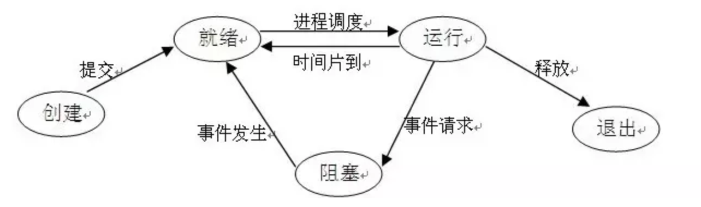

进程
进程、线程、协程是什么？
- 进程
- 系统资源分配的基本单位
- 分配三种基本内存资源
- 代码段：应用的执行代码
- 数据段：应用的全局变量、常量、静态变量（不会变化或很少变化的内容）
- 堆栈段
- 堆空间：存放各种变量数据
- 栈空间：子任务（线程、协程）独立存放自己数据的地方（函数调用、参数、返回值、局部变量等）
- 线程
- CPU 调度的基本单位
- 在进程内创建，可以共享进程的资源
- 需要为每个线程分配独立的栈空间，栈空间的大小是固定的
- 协程
- 可以在应用态协作的程序，它的调度不是操作系统处理，而是应用系统自己来调度处理，也称为轻量级线程
- 和线程一样，共享进程的资源（除了自己的栈空间）
- 和线程的主要区别
- 调度方式
- 线程：操作系统调度
- 协程：应用系统自己调度
- 栈空间大小
- 线程：固定
- 协程：可以动态调整（内存利用率更高）
- 调度方式
- 协程的优势
- 更好利用 CPU，不用把 CPU 浪费在线程调度和上下文切换上
- 可以更好利用内存
进程与线程的区别？
- 拥有资源：进程是资源分配的基本单位，但线程不拥有资源，线程可以访问隶属进程的资源
- 调度：进程是独立调度的基本单位。在同一进程中，线程的切换不会引起进程的切换；从一个进程中国呢的线程切换到另一个进程中的线程时，会引起进程切换
- 系统开销：
- 创建/撤销：创建/撤销进程需要分配或回收资源，付出的开销大于创建/撤销线程
- 切换：进程间切换涉及当前执行进程 CPU 环境的保存及新调度进程 CPU 环境的设置，线程切换只需保存和设置少量寄存器内容
- 通信：线程间可以通过直接读写同一进程中的数据进行通信，但是进程通信需要借助 IPC
进程的基本状态有哪些？它们之间如何转换？
- 新建态：刚刚创建的进程，操作系统还没有把它加入到可执行进程组中，通常是进程控制块已经创建但是还没有加载到内存中的进程
- 就绪态：进程已经做好了准备，已分配到所需资源，只要分配到 CPU 就能够立即运行
- 运行态：进程处于就绪状态被调度后，进程进入运行态
- 阻塞态（等待态）：正在执行的进程由于某些事件（I/O请求，申请缓存区失败）而暂时无法运行，进程受到阻塞。在满足请求时进入就绪状态等待系统调用
- 退出态：进程结束，或出现错误，或被系统终止，进入退出态。无法再执行
转换方式如下：

⚠️注：
- 只有就绪态和运行态可以相互转换，其它的都是单向转换
- 就绪状态的进程通过调度算法从而获得 CPU 时间，转为运行状态
- 运行状态的进程，在分配给它的 CPU 时间片用完之后就会转为就绪状态，等待下一次调度
- 阻塞状态是缺少需要的资源从而由运行状态转换而来，但是该资源不包括 CPU 时间，缺少 CPU 时间会从运行态转换为就绪态
进程同步与进程通信的区别？
- 进程同步：控制多个进程按一定顺序执行
- 进程通信：进程之间传输信息
进程间的通信方式有哪些？
- 管道 pipe
- 半双工的通信方式（单向交替传输）
- 父子进程通信
fd[0]为读而打开，fd[1]为写而打开
- 命名管道 FIFO
- 半双工的通信方式
- 去除了管道只能在父子进程中使用的限制
- 常用于客户-服务器应用程序中，FIFO 用作汇聚点，在客户进程和服务器进程之间传递数据

- 消息队列
- 是消息的链接表，存放在内核中。一个消息队列由一个标识符（即队列ID）来标识
- 可以实现消息的随机查询，消息不一定要以先进先出的次序读取，也可以按消息的类型读取
- 独立于发送与接收进程。进程终止时，消息队列及其内容并不会被删除
- 信号量 Semaphore
- 计数器，用于为多个进程提供对共享数据对象的访问
- 是一个整型变量，可以对其执行 down 和 up 操作，也就是常见的 P 和 V 操作
down：如果信号量大于 0 ，执行 -1 操作；如果信号量等于 0，进程睡眠，等待信号量大于 0up：对信号量执行 +1 操作，唤醒睡眠的进程让其完成 down 操作- down 和 up 操作需要被设计成原语（连续、不可分割的），不可分割，通常的做法是在执行这些操作的时候屏蔽中断
- 如果信号量的取值只能为 0 或者 1，那么就成为了 互斥量（Mutex） ，0 表示临界区已经加锁，1 表示临界区解锁
- 共享存储
- 允许多个进程共享一个给定的存储区。因为数据不需要在进程之间复制，所以这是最快的一种 IPC
- 需要使用信号量用来同步对共享存储的访问
- 套接字：不同机器间的进程通信
并行与并发的区别是什么？
- 并行：强调一起执行（多条线一起），需要同时
- 并发：强调有处理多个任务的能力，不一定要同时
- 所以：并行一定是并发，并行概念是并发概念的一个子集
如下图，并发是两个队列交替使用一台咖啡机，并行是两个队列同时使用两台咖啡机。